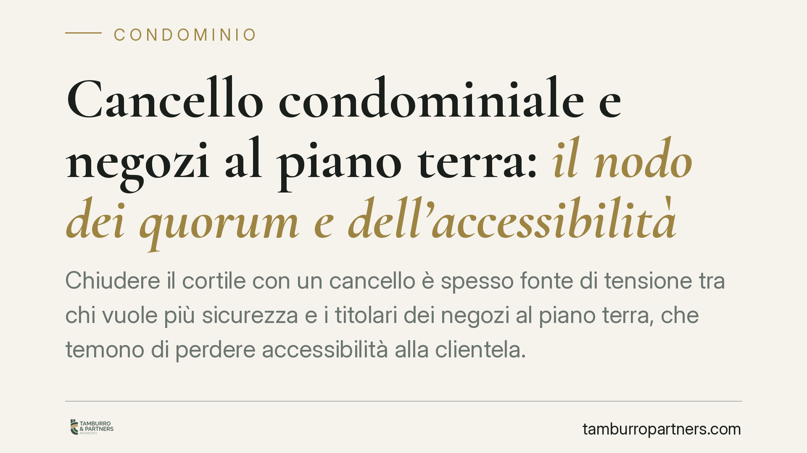

Cancello condominiale e negozi al piano terra: il nodo dei quorum e dell'accessibilità
Chiudere il cortile con un cancello è spesso fonte di tensione tra chi vuole più sicurezza e i titolari dei negozi al piano terra, che temono di perdere accessibilità alla clientela. La questione tocca due profili distinti: la legittimità astratta dell'opera e la sua gestione concreta. Vediamo come orientarsi tra le norme sul condominio.

Il problema
L'installazione di un cancello o di una recinzione sulle parti comuni è una delle decisioni condominiali più ricorrenti e più contestate. La ragione è semplice: esistono interessi legittimi ma contrapposti.
Da un lato il condominio tutela la sicurezza del bene comune, limitando gli accessi di estranei. Dall'altro i titolari di esercizi commerciali al piano terra temono che una chiusura rigida riduca la visibilità e l'accesso della clientela, con un danno economico diretto all'attività.
Conviene affrontare la questione separando due piani che spesso vengono confusi: se il cancello può essere installato e come deve essere gestito una volta installato.
Inquadramento normativo
Il primo errore da evitare è qualificare automaticamente il cancello come "innovazione". L'art. 1120 c.c. disciplina le innovazioni, cioè le modifiche che alterano la destinazione o la consistenza della cosa comune, e richiede quorum rafforzati. Ma non ogni intervento sulle parti comuni è un'innovazione.
La giurisprudenza distingue con cura. L'installazione di un cancello che non muta la destinazione del cortile e ne consente il normale uso a tutti i condomini viene più correttamente ricondotta all'art. 1102 c.c., che disciplina l'uso della cosa comune: ciascun partecipante può servirsene e il condominio può adottare misure che ne regolino il godimento, purché non ne alterino la destinazione né impediscano agli altri di farne pari uso.
In questa prospettiva, se il cancello serve a proteggere l'area comune senza sottrarla alla fruizione collettiva, non costituisce innovazione e la relativa delibera non richiede i quorum dell'art. 1120 c.c., ma quelli ordinari previsti dall'art. 1136 c.c. Resta però un punto fermo: l'opera non deve pregiudicare il pari diritto degli altri condomini, inclusi i titolari delle unità commerciali, a servirsi del bene.
Avvertenza metodologica: una recente ordinanza della Corte di Cassazione è stata segnalata in questo senso, ma invitiamo a verificarne gli estremi esatti in banca dati prima di farne un argomento in sede assembleare o giudiziale. In materia di parti comuni l'orientamento non è sempre univoco e va calato sul caso concreto.
Il criterio di bilanciamento
La legittimità astratta del cancello non esaurisce la questione. Anche un cancello validamente deliberato può diventare illegittimo nella gestione, se di fatto impedisce l'accesso alle unità produttive negli orari in cui queste operano.
Il criterio ragionevole — spesso valorizzato dalla giurisprudenza, ma da intendersi come interpretazione e non come principio di diritto automatico — è quello del bilanciamento: la chiusura deve essere compatibile con la fruibilità dei negozi. Una soluzione frequente è mantenere il cancello aperto, o comunque agevolmente accessibile, durante gli orari di esercizio delle attività al piano terra.
Si tratta di un equilibrio tra sicurezza del bene comune e accessibilità delle unità commerciali, non di una regola rigida: la soluzione corretta dipende dalla conformazione dell'edificio, dalla destinazione degli spazi e dalla concreta incidenza sull'attività.
Implicazioni pratiche
Per il condominio, il messaggio è duplice. La delibera sul cancello può essere adottata senza i quorum delle innovazioni, se l'opera non altera la destinazione del bene. Ma l'assemblea non può ignorare l'interesse dei titolari di negozi: una chiusura che azzera l'accessibilità commerciale espone a contestazioni e a richieste di risarcimento.
Per i titolari di esercizi, la contestazione non va impostata sulla mera esistenza del cancello — di regola legittimo — ma sulle modalità di gestione che compromettono l'accesso della clientela.
Cosa fare in concreto
- Verificate la qualificazione dell'opera prima di deliberare: distinguete tra semplice regolazione dell'uso comune e innovazione, perché cambiano i quorum necessari.
- Mettete a verbale il criterio di gestione, indicando orari e modalità di apertura compatibili con le attività commerciali presenti nell'edificio.
- Convocate e ascoltate i titolari dei negozi in fase deliberativa: documentare il confronto riduce il rischio di impugnazioni.
- Prevedete una soluzione tecnica flessibile (apertura temporizzata, telecomandi, badge) che concili sicurezza e accessibilità.
- Conservate la documentazione su delibera, verbale e specifiche tecniche, utile in caso di contenzioso.
Disclaimer
Contributo informativo a cura di Tamburro & Partners Avvocati – Avv. Giuseppe Tamburro. Non costituisce parere legale.
Ogni condominio ha una storia a sé.
Se gestisci un'amministrazione e vuoi un confronto su una specifica questione condominiale, scrivi allo studio. Ti rispondiamo entro un giorno lavorativo.